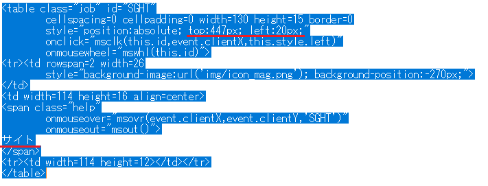
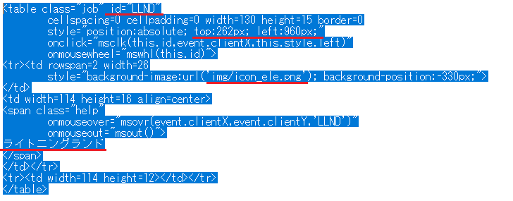
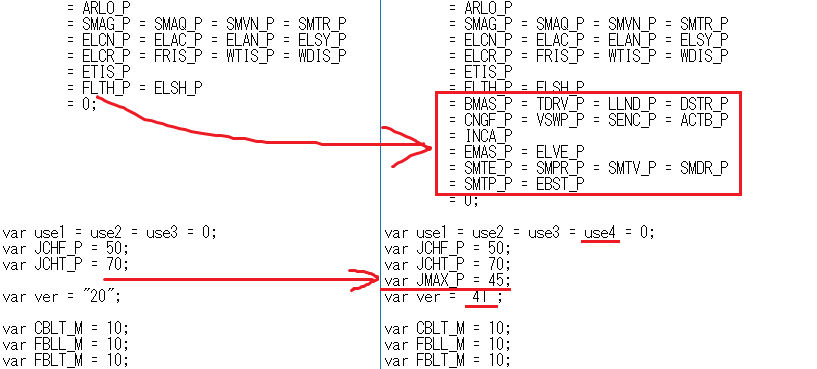
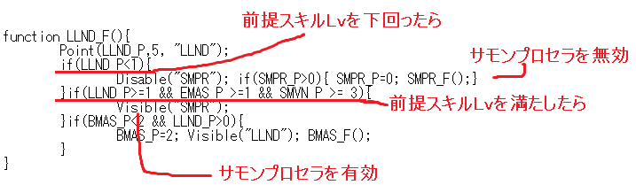
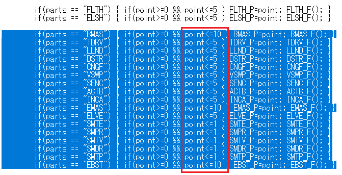
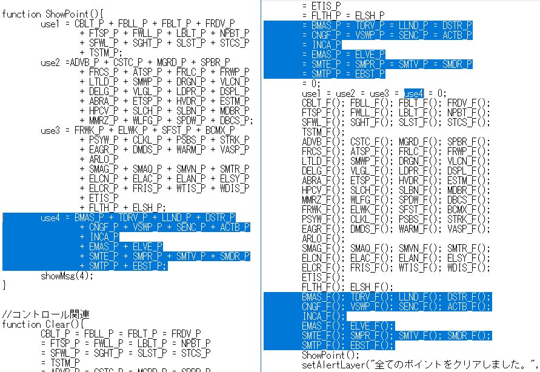
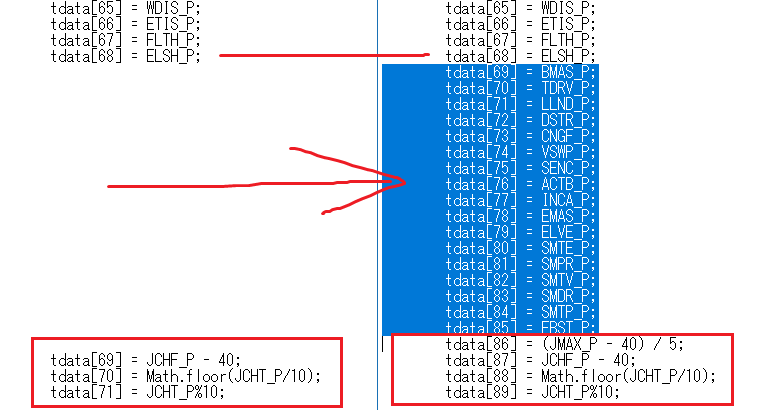
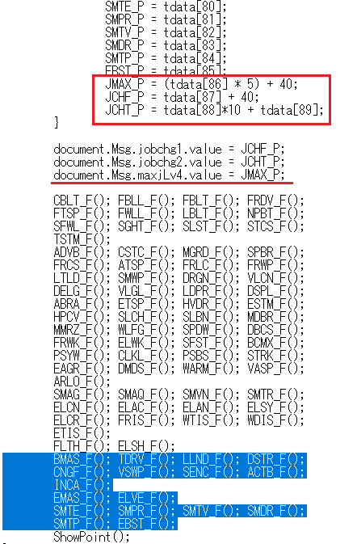
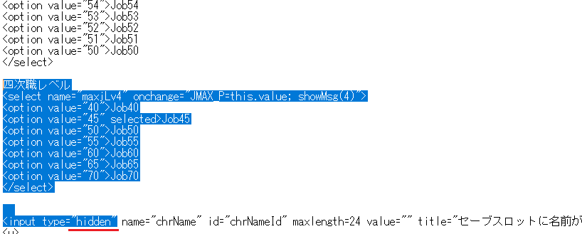

わむてる改造方法
オリジナルのソーサラー / エレマスの実装例 (ダウンロード)
ジッサイ分かり辛いので右上のダウンロードから soe.html と elm.html を
メモ帳か何かで見比べながらやってみると良いかもしれない
1.わむてる公式の下の方にあるゴミ箱のところから skill4.10.00.zip をダウンロードして展開。
2.ブラウザの倍率をCTRL+かCTRL-で100％にしてスクショをとってペイントかなんかで開いたら、
キャンバスの左上に画像を合わせ大体の配置を決める。無いスキルは適当にコピペして作る。雑でおｋ
3.スキルボックスの座標(この画像のサイトなら 20,445 らへん)をメモっとく。

4.改造したい職のhtmlファイルをメモ帳で開いて下の方～にある移動させたいスキルを検索して座標を上書きする。
一番上のスキル(上の画像ならストーンカース)の座標をtopだけ変えて書いてくと楽。

5.追加スキルを書き足す。下のようなブロックをコピペしてIDとスキル名、座標をキャンバスのに変更する。
IDはオレオレIDでおｋだが重複不可、追加したスキルIDは控えておくこと(下の画像なら LLND)
アイコンは似たようなスキルからコピペ。

次から面倒臭いので 2.～5. を何回か繰り返し、ブラウザで見て納得行く配置にしとくと吉。
配置が決まったら、back_job.png の背景画像(色分けと矢印のやつ)もペイントかなんかで作る。
6.追加したスキルIDを実装していく。
skill4.jsをダウンロード(右クリックで保存)してdatフォルダに上書きする。
htmlファイルの上の方にある部分に追加した =スキルID_P を =0; の間に書き足す。
ついでに use4 と JMAX_P = 45; を追加し、verを40かそのへんにする。
その下に続く スキルID_M も最大スキルレベルなので追加していく。
(補足: _P が現在使用してるスキルポイント _M が最大 _F が動作)

7.追加したIDが前提のスキルを追加していく。スキルID_M の下に スキルID_F があるので追加する。
例えばライトニングランドはサモンプロセラの前提なのでプロセラを追加する。
三次が前提の場合、三次職スキルの方も忘れずに書き足しておく。
モンスター情報のように独立したスキルなら Point行だけでおｋ

<書式>
function スキルID_F(){
Point( スキルID_P, 最大スキルレベル, "スキルID");
if( スキルID_P < 1 ){
// スキルLvが前提以下の場合は対象スキルIDを無効にする
Disable("無効スキルID"); if( 無効スキルID_P > 0){ 無効スキルID_P=0; 無効スキルID_F(); }
}
if( スキルID_P >= 1 && 別の前提スキルID_P >= 1 ){
// スキルLvが前提以上の場合は対象スキルIDを有効にする
Visible("有効スキルID");
}
if( 前提スキルID_P < 2 && スキルID_P > 0 ){
// このスキルIDが前提を満たして居ない場合、前提分のポイントを追加する
前提スキルID_P = 2; Visible("スキルID"); 前提スキルID_F;
}
}
8.スキルレベルの範囲を追加する
if(parts == "スキルID") のブロックが大量にあるので、追加してスキルIDの最大レベルを指定する。

9.ポイント表示やらクリアやら追加、use4 を追加して四次職スキルはそこに入れる。コピペ地獄。

10.セーブ
0から滝のように連番でならんでるので、追加したスキルID_P を連番になるように追加
赤枠の部分は全職共通の転職Lvなので、四次職用の tdata[xx] = ( JMAX_P - 40 ) / 5; を加えて最後に移す。
連番で最後が89なら0から始まってるので90個をブロックの先頭にある var tdata = new Array(個数); に設定する。

11.ロード
セーブで追加したのと同じ番号にスキル_Pを割り当てる事、四次職用に JMAX_P = (tdata[xx] * 5) + 40; を加える。
それに加えて document.Msg.maxjLv4.value = JMAX_P; を追加しておく。下の スキルID_F ブロックも追加。

12.四次職 最大JobLv
Job40から増えてくのが予想されるので、転職レベルの下に5きざみで70まで追加しておく。
名前欄の場所を使うので名前欄の type="text" を type="hidden" にしておく。

おわり
やるやつおらんやろ… 特に 7. 10. 11. を人に説明するの無理ゲー過ぎる…
バグるならそこ。ミスしやすいのは 5.でコピペし過ぎてIDかぶるやつ。